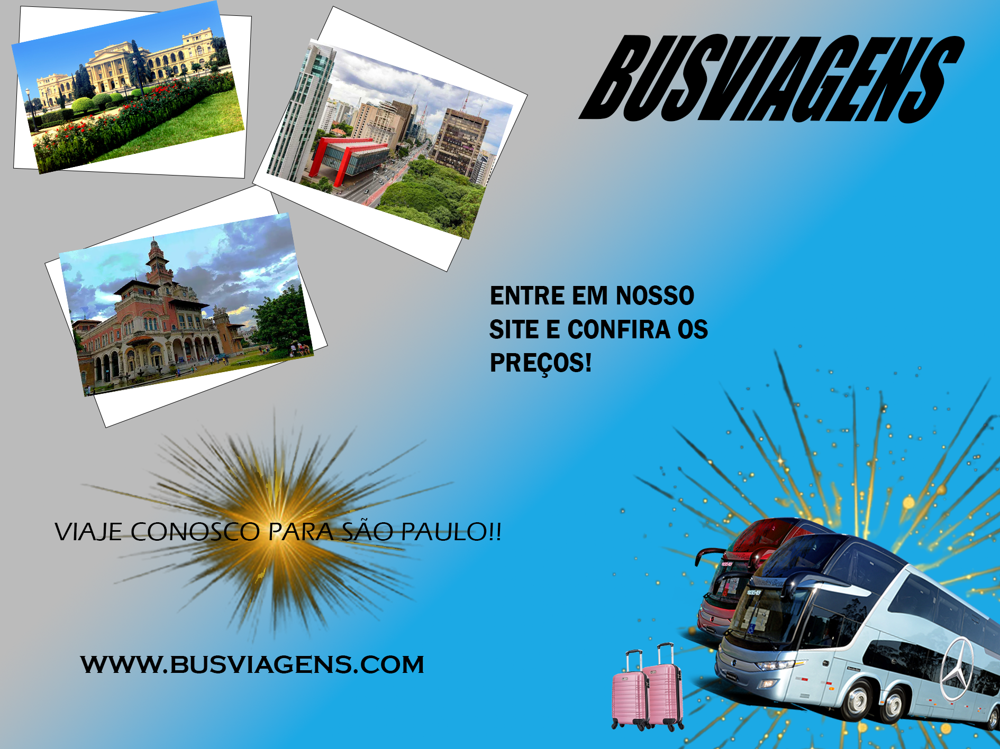
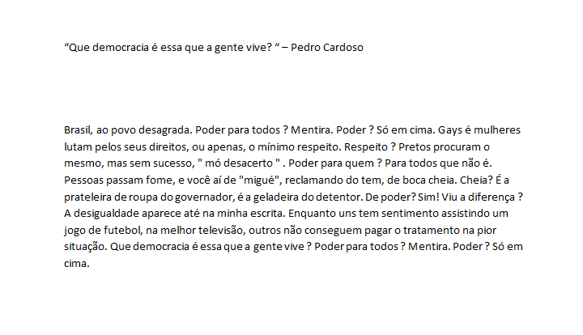
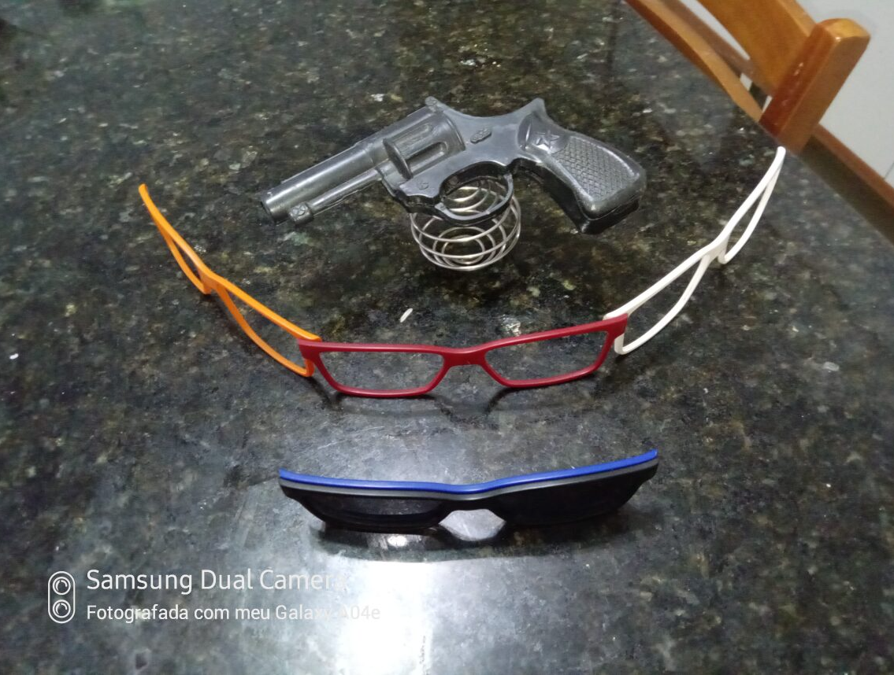
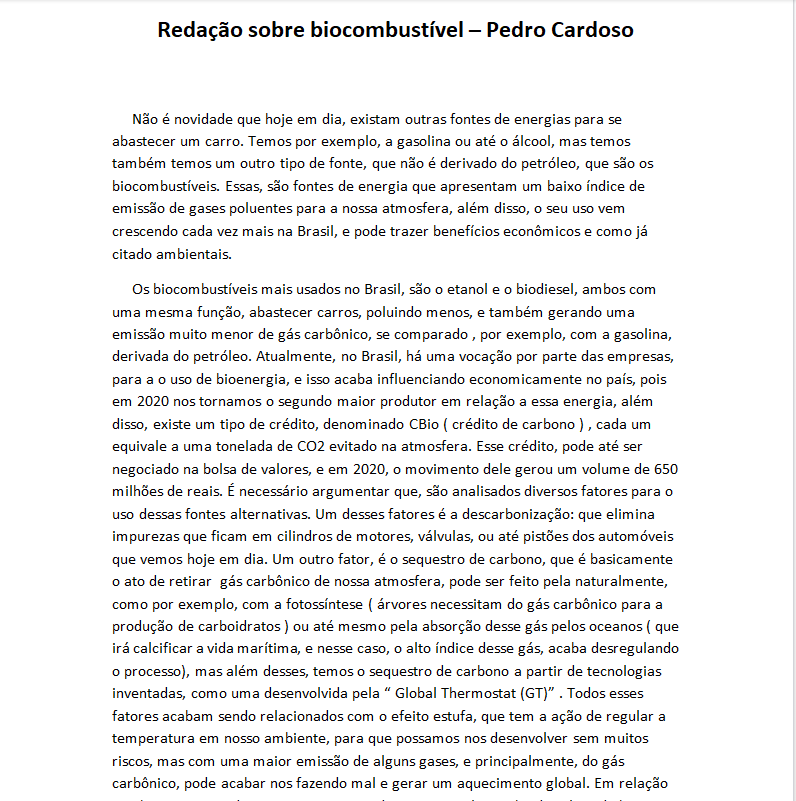

No enino médio aprendi muitas coisas, não só em minha formação técnica, mas também em várias outras áreas. Primeiro de tudo, gostaria de apresentar alguns dos meus últimos trabalhos.
Nesse projeto, era necessário fazer uma propaganda para uma padaria, dizendo que havia pomoções em produtos que estavam chegando próximos a validade. Para as cores, usei aplicativos que mostrem cores que se relacioneme entre si, com tons mais puxados para o marrom. Procurei colocar palavras maiores como uma forma de chamar atenção do público, sempre colocando, também, a marca em evidência. No projeto foi usado o app Adobe Illustrator.
Neste outro projeto, deveríamos fazer 2 páginas iniciais da página do Senac, uma contendo quadros para colocar login e senha, e outra página contendo uma barra de pesquisa para escolha de cursos, além de conter os próprios cursos. Em relação a cores, imagens e a própria forma do projeto, me baseei nos próprios aspectos da página oficial do Senac. No projeto foi usado o aplicativo Figma.
Atividade com melhor desempenho (opinião própia) e que mais me marcou.

Essa atividade foi a que mais me marcou pois é uma imagem que, em minha visão, consegui atender todos os objetos que forma solicitados. Foi um progeto que deveríamos fazer uma propagando de viagens. Se eu tivesse uma empresa de viagens e pedisse para que um desginer fizesse uma propaganda, esse projeto seria o que viria em minha mente para que eu aprovasse o trabalho do profissional contrata, então, acho que me sai bem. Os aplicativos usados foram o Adobe Illustrator e o Photoshop.
Meu desempenho em geral
Cheguei no ensino médio meio tímido, mas sou muito grato pois todos me acolheram e formei grandes amizades, tando com professores quanto alunos, e isso me tornou muito mais feliz. Profissionalmente, aprendi muitas coisas no curso de TI e em relação a outras áreas, mas, especificando em meu curso, aprendi sobre cabeamentos, componentes de computadores (hardware), softwares, como configurar um computador e várias outras coisas. Fiquei muito mais interligado com a área de TI, e comecei a querer saber mais sobre as áreas e os assuntos tratados dentro desse mundo imerso. Foi uma experiência muito boa, pela oportunidade de aprendizado e conhecimento que poucos podem usufruir. Agora, em relação as outras áreas, consegui abir minha cabeça e ser mais racional, pois entrei no ensino médio com pensamentos totalmente diferentes dos de agora, isso foi uma evolução pra mim. Além disso, me tornei muito mais responsável, e comecei a pensar muito mais no meu futuro. Espero que eu continue com essa mentalidade e que nada disso mude. Infelizmente não consegui dar meu 100 por cento em todas as atividades desse período, mas consegui correr atrás das minhas reponsabilidades de cabeça erguida.
Aqui estão algumas das atividades que realizei durante o ano

O objetivo dessa atividade era fazer uma poesia, um RAP, sobre democracia. Foi uma atividade muito boa de ser feita, pois gosto muito de poesia e RAP.

Nesta atividade, tínhamos que fazer um READY-MADE, uma forma artística que consiste em pegar objetos industriais aleatórios, junta-los, fazendo perder suas utilidades, e após isso, montar um conceito.

Nessa ativade, deveríamos montar uma redação sobre biocombustivel, mas não é só porque é uma redação que foi algo simples, essa redação exigia muitas pesquisas em artigos científicos, e foi algo muito cansativo de fazer. Essa imagem é apenas uma prévia da redação.
Essa foi uma prévia do meu ensino médio, espero que tenham gostado.

.png)